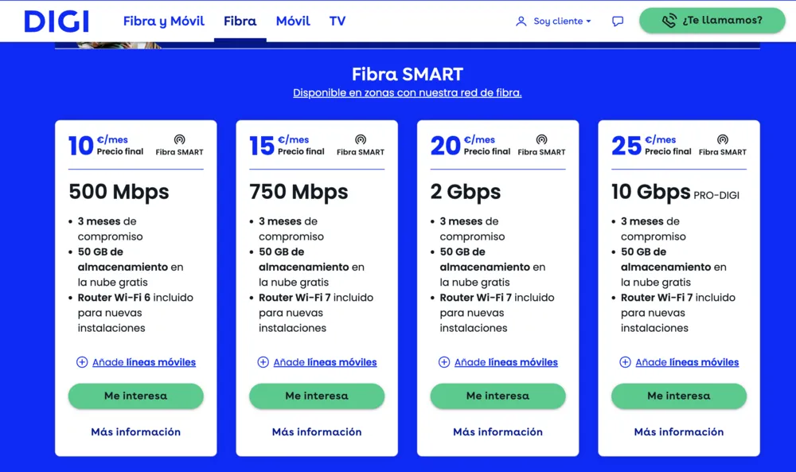

Mamaandroid CC El Atrio
Calle La Cámara 37, Centro Comercial El Atrio. Atención para fibra DIGI, móvil, prepago, recargas y portabilidades.
Tienda DIGI en Avilés
Te atendemos en nuestras dos tiendas de Avilés: Centro Comercial El Atrio y Calle Rivero 110. Revisamos cobertura DIGI, portabilidades, fibra, móvil, fibra + móvil, prepago, recargas y dudas antes de contratar.
Atención presencial DIGI
Si buscas una tienda DIGI en Avilés, puedes venir a Mamaandroid en el Centro Comercial El Atrio o en Calle Rivero 110. También puedes escribir por WhatsApp para consultar cobertura antes de desplazarte.
Calle La Cámara 37, Centro Comercial El Atrio. Atención para fibra DIGI, móvil, prepago, recargas y portabilidades.
Calle Rivero 110 bajo, Avilés. Consulta cobertura DIGI, dudas de línea, fibra + móvil y gestiones habituales.
Envíanos tu dirección y te ayudamos a revisar si hay cobertura DIGI en Avilés, Corvera, Castrillón o alrededores.
Servicios DIGI
Revisamos tu dirección para comprobar cobertura de fibra DIGI, Fibra SMART y opciones disponibles en tu zona.
Te orientamos con combinaciones de fibra y móvil DIGI según lo que necesitas realmente.
Atendemos recargas, prepago y dudas habituales en tienda para que no tengas que resolverlo solo.
Te ayudamos si quieres traer tu línea a DIGI o revisar qué opción encaja mejor antes de cambiar.
Contratar DIGI paso a paso
Sin colas ni llamadas: lo dejamos listo contigo en tienda o empezamos por WhatsApp.
Nos dices tu dirección (en tienda o por WhatsApp) y comprobamos si llega la fibra DIGI y qué velocidad tienes disponible.
Comparamos fibra, móvil o fibra + móvil según lo que usas de verdad, sin pagar por lo que no necesitas.
Tramitamos el contrato y, si quieres, traemos tu número actual a DIGI sin perderlo.
Sales con la SIM activada y, si luego tienes dudas o incidencias, vuelves a la misma tienda.
Qué traer
DNI o NIE en vigor del titular del contrato.
El número de cuenta (IBAN) donde se domiciliarán las facturas.
La dirección completa si contratas fibra y la línea que quieres traer si haces portabilidad.
Ya eres cliente DIGI
Para contratar DIGI, hazlo con nosotros: en El Atrio o en Calle Rivero 110 revisamos tu cobertura, elegimos la tarifa contigo y tramitamos el alta y la portabilidad en el momento. También puedes empezar por WhatsApp.
Si ya eres cliente y tienes una duda o una incidencia con tu servicio, el servicio de atención al cliente de DIGI es el 1200, gratuito desde tu línea DIGI. Y si prefieres que te lo resuelva una persona cara a cara, ven a nuestras tiendas: te ayudamos con recargas, duplicados de SIM y dudas de tu línea o tu fibra.
Zonas atendidas
Muchas búsquedas se hacen por barrio o población. Por eso agrupamos las zonas donde más suelen consultarnos.
Atendemos clientes de Avilés y barrios como Llaranes, Versalles, La Carriona, Miranda y Valliniello.
Consultas DIGI para Las Vegas, Los Campos, Cancienes, Nubledo, Trasona y el resto del concejo.
Ayuda para DIGI en Piedras Blancas, Salinas, Raíces Nuevo y otras zonas cercanas.
Novedades DIGI
Publicamos novedades importantes de DIGI explicadas con enfoque local para Avilés, Corvera de Asturias y Castrillón.
Tienda DIGI
Servicios DIGI en tienda física: cobertura, fibra, móvil, portabilidades, prepago, recargas y SIM.

Fibra DIGI
Qué incluye la nueva tarifa y cómo consultar cobertura desde Mamaandroid sin salir hacia otra web.
Preguntas frecuentes
En Mamaandroid puedes dejar tu dirección y te ayudamos desde tienda a revisar disponibilidad y opciones.
Sí. Recibimos consultas de Corvera de Asturias, Castrillón y zonas como Las Vegas, Trasona, Piedras Blancas o Salinas.
Sí. Además de fibra y móvil, atendemos prepago, recargas y dudas de clientes DIGI.
Puedes acudir a Mamaandroid en Calle Rivero o en el Centro Comercial El Atrio para consultar servicios DIGI con atención presencial.
Sí. Atendemos consultas de DIGI para Corvera de Asturias, incluyendo Las Vegas, Los Campos, Cancienes, Nubledo y Trasona.
Sí. Desde Mamaandroid Avilés atendemos consultas de Castrillón, especialmente Piedras Blancas, Salinas y Raíces Nuevo.
Para dudas o incidencias de tu servicio, el 1200, gratuito desde tu línea DIGI. Para contratar o recibir ayuda en persona, ven a nuestras tiendas de Avilés.
DNI o NIE, la cuenta bancaria para la domiciliación, la dirección de instalación si contratas fibra y la línea que vas a portar si quieres conservar tu número.
Sí. Te ayudamos a revisar cobertura, resolver dudas y valorar opciones de fibra, móvil, fibra y móvil, prepago o portabilidad.